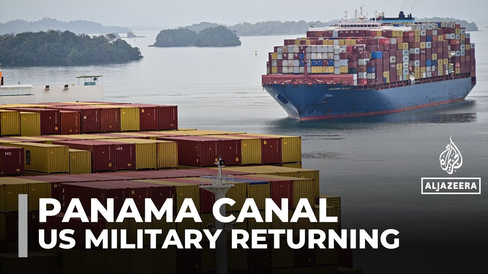

【美军重返巴拿马，运河控制权争议再起】
Summary: The US and Panama signed an agreement allowing US military to operate from former bases, sparking historical concerns and sovereignty debates amid US-China influence rivalry.
摘要： 美巴签署协议允许美军重返前军事基地，引发历史担忧和主权争议，同时凸显美中在运河影响力之争。

⏱️ Estimated Reading Time: 4 min
📚 六级生词 📚 雅思生词 📚 托福生词 📚 GRE生词 📚 视频里的生词
For nearly a century, the United States controlled 1,500 square kilometers of Panama, a 16 km wide strip along the Panama Canal.
近一个世纪以来，美国控制着巴拿马运河沿岸16公里宽、1500平方公里的区域。
The former canal zone included 16 military bases to support US operations in the region, including invasions.
前运河区包含16个军事基地，曾支持美国在该地区的行动，包括军事入侵。
But while the US built canal was returned to Panama 25 years ago, since January, President Donald Trump has been vowing to take it back.
尽管美国建造的运河25年前已归还巴拿马，但自1月起，特朗普总统一直誓言要收回控制权。
Now, a memorandum of understanding signed between both countries will allow US armed forces to operate from three former US air and naval facilities on a rotating basis.
如今两国签署的谅解备忘录将允许美军轮流使用三个前空军和海军设施。
Former President Egnesto Pettis Viades calls it offensive because of our history.
前总统埃内斯托·佩雷斯·巴利亚达雷斯称此举具有冒犯性，源于历史伤痛。
We had a uh we had a colonial presence here for many many years and we don't forget that shameful years.
我们曾经历多年殖民统治，不会忘记那段屈辱岁月。
It creates questions in everybody's minds.
这引发了所有人的疑虑。
Both governments insist that the enhanced US military presence will enable aerial and maritime interdiction missions and facilitate joint training with Panameanian police to protect the Panama Canal.
两国政府坚称增强美军存在将支持空海拦截任务，并促进与巴拿马警方联合训练以保护运河。
In 1948, the McKenzie battery became part of the US Army Jungle Training School, which was also used by US Special Forces during the Cold War.
1948年，麦肯齐炮台成为美军丛林训练学校的一部分，冷战期间亦被美军特种部队使用。
But in 1999, all this, the Panama Canal Zone, was returned to Panama.
但1999年，整个巴拿马运河区已归还巴拿马。
Now the US Army will again be using Fort Sherman for training but also according to the new agreement the United States will be quote helping to protect the Panama Canal from malign foreign interests.
如今美军将再次使用谢尔曼堡训练，同时新协议规定美国将"协助保护运河免受恶意外国势力影响"。
It's a direct reference to China which the Trump administration claims controls the Panama Canal.
这直接指向中国——特朗普政府声称其控制着巴拿马运河。
Together we will take back the Panama Canal from China's influence.
我们将共同从中国手中夺回运河控制权。
Panama staunchly denies that China or any other country controls the canal.
巴拿马坚决否认中国或其他国家控制运河。
But many Panameanians say that Trump has carried out a bloodless coup here by bullying Panama into making concessions that some believe violate the Panama Canal Neutrality Treaty.
但许多巴拿马人认为特朗普通过胁迫让步实施了"不流血政变"，有人认为这违反《巴拿马运河中立条约》。
Foreign Minister Kabad Martinez Acha insists the agreement does not sacrifice Panama's sovereignty or the treaty, but concedes that his country has been caught in the middle of the dispute between the US and China for world influence.
外长卡巴德·马丁内斯·阿查坚称协议未牺牲主权或条约，但承认巴拿马陷入美中全球影响力之争。
We need to be very intelligent.
我们必须保持高度智慧。
We need to be very prudent and we need to be very brave to manage what's happening in the world.
必须极其审慎且勇敢应对世界局势。
Why do you have to be brave?
为何需要勇气？
Because the canal is our religion and you know people in the USA are are starting to understand that the best way to have Panama as a friend is to respect the sovereignity of Panama.
因为运河是我们的信仰，而美国民众正逐渐明白：尊重巴拿马主权才是赢得友谊的最佳方式。
In the meantime, the US Defense Department is boasting that it's got what it wants from Panama.
与此同时，美国国防部吹嘘已从巴拿马获得所需条件。
Perhaps enough to take this country off Trump's radar.
或许足以让该国退出特朗普的关注名单。
Lucia Newman, Al Jazer, Cologne, Panama.
露西娅·纽曼，半岛电视台，巴拿马科隆报道。
Make sure to subscribe to our channel to get the latest news from Al Jazer.
订阅频道获取半岛电视台最新资讯。